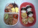

ニューカレドニアとは、空が青く・海も青く・真っ白なビーチが続いていて・・・なのにホテルのベランダに出ると、空は灰色・突風と小雨が・・・悪夢だ！
今日から５日間は、飛行機で２０分ほどの離島「イル・デ・パン」で過す。飛行機はなんと自由席。こんなことは初めてだ。まるで大型バスに乗っているような感じで、特に今日は風が強いので、島に着く頃には飛行機の横揺れが激しく、ママはもう生きた心地がしなかった。現地到着９時１０分、やはり突風＆雨。４泊する「ホテル・ク・ブニ」は、１棟づつのバンガロー風の建物が１２棟建っているだけのとってもこじんまりした施設。道路を隔ててすぐに「クト湾」があり、お天気は悪いけど確かにパウダーサンドときれいな海水である。あとはお天気を祈るのみだ。ひとまず今日は旅の疲れを取るためにのんびりしました。
我家では今日から９日間のゴールデンウィークに入ります。折角の長いお休みなので、旅行好きのパパはやっぱり計画してくれました。う・うれしい！！ ということで、ニューカレドニアへ行ってきま～す。由起子にとっては初の海外旅行、、、準備物もチェックリストを作り、お薬なんかもちゃんと用意しました。いざ、出発！
ほぼ予定通りの正午に関空を出発。こんな小さい頃の旅なんて、きっと印象に残らないだろうけど、ちゃんとママがこの日記で残しておくからね。８時間半の飛行は、色んなことがありましたがなんとか（現地時間の）１０時過ぎに首都ヌメアに到着。今夜はヌメアで一泊し、明日の朝、離島に渡ります。
とってもどんくさいママは、今日の午後、経理部から職場に戻る途中の階段で、４段を踏み外してしまった。すれ違う人がいなくて本当に良かった。靴の音も、身体がドスドスンと落ちて行く音も、痛みも・・・全てがまだ鮮明に頭に残っている。これが難波駅や本町駅だと、とんでもなく恥ずかしかっただろう。おまけに通り過ぎて行く人から、しらぁっと冷たい視線を浴びることになってたかも。
今夜由起子はパパ方のおばぁちゃんと一緒にお風呂に入った。おばあちゃんのオッパイをジィーッと見つめて、触ろうとしたらしい。ママに話をしてくれるおばぁちゃんを見てて、「おばあちゃんはきっと、パパや章子おばちゃんが小さかった頃を思いだし、懐かしんでたんじゃないかしら？」と思いました。
最近特に「オシッコ」の成功率が、グーンとアップしてきました。自分でも嬉しいらしく「デタァー！」と報告してくれます。廊下やお部屋にオモラシするってことが、今のところほとんどありません。このまま順調にいくのかしらねぇ・・・？
先生の日記に「今日は裏庭で土遊びをしました。久しぶりにお外で遊び、ニコニコとっても嬉しそうな由起子ちゃんでしたよ。三輪車をお友達から取って、ニコッと笑っていた由起子ちゃんです。」とありました。最後の文章が気になるママです。お友達から無理矢理奪ったのではないかしら？とか、力の強い由起子のことだから、もしかしたら乗っていたお友達を押して泣かせてしまったのではないかしら？とか、考えてしまいましたよ。
夕食に興味がなくなったり、眠くなったり、お腹が一杯になったりするととんでもないことをしでかしてくれる。今夜は、お茶を飲む振りをして「ベェー」と口からこぼしたり、ママが注意をすると「ゴックン」と飲むのに、またまたちょっと目を離したりすると、机の上にお茶をこぼして、なにやら一生懸命拭き掃除をしている。だからママは２人で食べる夕食はかなわんのです。
この週末は２日間ともお天気がとってもよく行楽日和である。お家の中で由起子もママも退屈していた。知り合いの人から飛鳥方面の菜の花畑がとても美しいと教えてもらっていたので、午後からお出かけすることに。由起子はボールをしっかりと持って、やはりお外へ行くのはウキウキしている様子。菜の花畑は、、、それはもう、とってもきれいでしたよ。写真とインターネットビューカムを更新しています。そちらも覗いてくださいね。
買物途中の昼食タイム、お昼寝の時間と重なってしまった由起子は、めちゃくちゃご機嫌が悪く、今までにない「ゴンタ娘」になっていた。ママはもう食べた心地がしなかったぞ！こんなことならお家で食べた方がゆっくりできたかもしれない。
シトシト雨が降り続く。こんな日はお迎えがたいへーん。保育所から我家までの国道はとっても危ない。歩道はないし、白線は消えかかっているし、トラックやバスやダンプカーが横を通ると風圧を感じてしまうくらい。役所の方、なんとかしてくださーい。
会社の人にとっても素敵なクラシック音楽サロン「POCO A POCO」に連れて行ってもらった。腹ごしらえが終わり、集った人でヴァイオリン＆ピアノ演奏、そしてピアノ伴奏でのお歌など、とってもユニーク。店内のあちこちに弦楽器が置かれてて、出てくる楽譜はというと、ねんきの入ったものばかり。宴もたけなわというのに、やはりママはママだから、９時にお店を出ることに・・・。早退したからママは歌わずに済んだけど、もうちょっと居りたかったなぁ・・・。由起子は、パパ方のおばあちゃんちでお風呂に入れてもらい、ぐっすり眠っていた。連日・連夜遅くなってゴメンネ！
パパがお休みだったので、先週行った血液検査の結果を聞きに小児科へ行ってもらった。由起子の血液型はAB+。なんと、パパと一緒だった。携帯電話にくれたメールを読んで、ママはなぜかしら由起子がパパと同じで嬉しかった。その他アレルギーはなく、風疹は陰性とのこと。
保育所から帰ってくると、ハイツの周りで近所のお兄ちゃん・お姉ちゃんたちが遊んでいる姿を見つけて、ベビーカーにベルトでくくり付けられているというのに、ちぎれんばかりに身体を乗り出し「あっちぃー、いっくー（あっちへ行きたいよー）」と叫び続けます。遅い時間だし、マンマ食べようよぉと言っても、少し上のお兄ちゃん・お姉ちゃんが大好きで、結局夕食の準備ができないまま真っ暗になるまで遊んでしまいました。
先週まるまる一週間保育所をお休みしたので、今日は１０日ぶりの登園です。昨夜、クリスマス会の集合写真をジィーッと見ているので「保育所行きたいね」と言うと、元気に「ハーイ！」と返事をしてました。お友達と遊びたいだろうな・・・。
夕食は「おばあちゃん特製のお好み焼き」でした。ものすごい食欲の由起子は、ニコニコしながらパクパク大きなお口を開けて美味しそうに食べていきます。最近「かんぱーい」が大好きで、お茶の入ったコップを持って「カチン！」と鳴らすことを何度もします。「もぉいっかーい」が口癖です。
従兄弟の‘享平くん’の「お食い初め＆初節句」のお祝に、おじいちゃん・おばあちゃんと一緒にお出かけした。1ヶ月ぶりに会う享平くんは、一段と男前になっていた。りりしい眉毛にくりくりの大きなお目々、涼しげな口元・・・由起子がとっても‘うすい顔’に見えてしまう。我家で使っていたベビーベッドが懐かしいのか、由起子はずっとベッドを占領してしまってた。
パパは昨日の仕事の続きで、出かけてしまった。由起子と二人、お天気も悪いからずーっとお家の中で過す。読みたい本「だから、あなたも生きぬいて」を最後まで読めて、こんな休日も良いなぁって感じ。子供を育てていくのに参考になった本でした。人間ってこんなにも頑張れるのかぁと感心もしました。
水曜はパパ方のばあちゃんち、そして今日はママ方のばあちゃんちで過す。一昨日の病院では先生に「保育所に行ってもＯＫだけど、このブツブツじゃ先生が嫌がらはるでしょう」と言われていたので、保育園は月曜日から復帰することにした。
第２金曜：パパのノー残業デーにあわせて、送別会＆打ち上げ会を決行したのに、パパの仕事の都合で由起子のお迎えにおばあちゃんちに行けなくなった。仕方なくママが駅からタクシーに乗って由起子を迎えに行き、おばあちゃんに車を出してもらい我家へ送り届けてもらったら１１時半になっていた。おばあちゃん！ほんとうに迷惑かけてゴメンナサイ！パパの帰宅は４時頃だったとか・・・身体、気ぃつけや。もう若くないんだから・・・。
今日はママがお休みを取って由起子と過した。あんなに「マッマァ～、チィ！」と言ってた由起子が、今日は一回も言わなかった。こんなこともあるかぁとあえて「チィは？」と聞かずに放っておいたら、夜までチィ（オシッコ）のことは一切口にせず、トイレの前に立つこともなかった。子供って気まぐれなのねぇ。。。
車の運転ができない（もちろん車はパパが通勤で使っているからお家にはないんだけど・・・）ということで、今日はとっても悔やまれた。由起子を病院に連れて行かなくちゃ行けないのに、パパが帰って来れなくなった。仕方なくトボトボベビーカーで歩いて行くことに。暗い道を歩きながら「車に乗れたらなぁ～」何度思っただろう。由起子の発疹ブツブツのホッペに当たる夜風は良くないんじゃないかなぁと心配しながら、暗くて由起子が泣き出さないように何度も何度も「犬のおまわりさん」を歌うママであった。パパァ・・・。
採血はものすごくかわいそうだった．．．看護婦さんに指示されて、ママは由起子の身体を馬乗りで押さえつけなくてはいけない。大人の採血と同じように、ベッドに寝かされ、右手を出して、ゴムひものようなもので腕をくくられ、布団針のような注射針が由起子の腕にブッツリ。。。あぁ～泣き叫ぶ由起子。ママと看護婦さんの二人が押さえつける役で、もう一人の看護婦さんが、針を刺している。注射の後しばらくは、ママの首にしがみ付いたままの由起子でした。
「でーんちゃっ！」と言いながら、由起子は喜んで窓から見える「近鉄電車」や「ＪＲ」に指をさす。ゆっくりボォーと外を眺めるのなんて久しぶりのこと。お天気も良いし、どこかで犬の鳴き声や、鳥の声、自動車の音、工事の音がする。由起子との大切な時間、今日は思いっきり遊ぼうね。お外を見飽きたら、次はゴム風船の投げあいっこ。顔の発疹はなかなか引かないけれど、由起子の元気度はものすごい。絶好調だよ～ん。
朝一番かかりつけの小児科へ行ったけど、運の悪いことに「ＡＭ臨時休診」だった。ハヘェ～・・・由起子の病気はわからないまま、発疹は昨日よりひどくなっている様子。特に顔の発疹は、赤みがかってきててちょっと不気味。ママは明日のミーティングに出す資料作りと、明日お休みを取るために、午後から出社して、由起子はおばあちゃんと過した。夜、再び小児科へ。ウィルス性の風邪ということで、特に「麻疹」や「水疱瘡」「風疹」（といった伝染病）ではなかった。ただ、カルテを見ていた先生から、数ヶ月前にも発疹で診察を受けているため、一度血液検査をするように勧められた。血液検査は明後日の夜、、、発疹がひどいため保育園はしばらくお休みしなくてはいけません。
明日から平常通りの保育が始まる。お弁当からも開放される・・・と思っていたら、なにやら由起子の顔・身体・手足に発疹が出ているではないか？！ これはもしかしたら「風疹」「水疱瘡」かもしれない。麻疹は１月に予防接種を受けているし、突発性発疹によく似ているけど、去年の９月になっている。昨日、パパが眼科へ診察に行き「結膜炎」になってて、由起子もそれが移るんじゃないかと心配していたら、それどころじゃない様子。ひどいので休日診療に連れて行ったが、小児科の先生ではなかったので結局わからずじまい。あ～またまた明日、ママは会社を休まなくてわ・・・。
ポカポカ陽気に誘われて、ママの豪華手作り弁当（デザート付きよ！）を持って、安倍の知恵文殊にお花見に行った。ワンワンや赤ちゃんやトト（コイ）やニャンコちゃんなど、いっぱい見たね。桜の花は満開でとってもきれい！ パパは少々お疲れ気味かお昼寝してました。ママは動きまわる由起子をインターネットビューカムに収めようと必死でした。そちらも覗いてください。
「ママァ、チィ」３０～４０分おきにママを呼ぶ。チィを言い出してから今日で１０日目。由起子のオシッコ成功率はぐーんとあがった。しかし、パパが覗きに来ると、キンチョーして上手く出ない。。。こんなに何回も成功してるのに、パパにはまだ見てもらえてないのよね。
入園式でもらってきた資料には、６（木）～８（土）は午前中のみの保育で１２時までにお迎えに・・・と書いてあり、５時までの特別保育じゃないのかぁとブルーになり、昨夜遅くママ方のおばあちゃんにヘルプを求め、あんまりシステムがわからないまま登園した。念のため顔見知りの先生に、全員１２時までのお迎えなのかと確認したところ、「ゆきちゃんは５時までですよね」と言われ、やっぱり何がなんだかわからーん。幸いママは午前中有休を取っていたのですぐにお家に帰り、由起子のお弁当を作ったわよ。システムがよーわからん！
今日は大変反省です。由起子の入園式だったのに、秋から入ってる由起子は在園生なので、入園式は関係無いと思い込み、普通にお弁当を持って８時にパパが行ってくれた。所々の事情はここに書くと長ーくなるので割愛、大ヒンシュクをかうところ、おばあちゃんが仕事をほっぽり出して、かけ込み１０時の式に滑り込んでくれた。ここでママの言い訳を少し・・・。入園式の案内が来た時、いちおう日記で先生に確認はしたのよ。今もその日記を読み返すとどうしても「必ず出席」ととれません。今更言っても仕方ないけど、ママだけが悪いんじゃないと、パパに慰めてもらってホッとしています。それにしても由起子の保育所は、毎年入園式には親子で出席するんですって。来年は必ず休暇を取って出席するから、今年のことは許してね。

←今日の由起子のお弁当
昨日がママんちなら、今日はパパんちのおばあちゃんが、お休みまでして由起子の「送り＆迎え」を協力、ホント助かるわぁ！ 早い時間に夕食も食べさせてもらってるので、比較的由起子の機嫌も良く、ママは家事にも専念できます。今、由起子がよく食べるお菓子を紹介、それは「そら豆」。あんなかたいものって驚きですが、由起子は歯ごたえのある物が大好き！クッキーやケーキよりも「おかき」には目がありません。そら豆の他、おしゃぶり昆布も大好きです。知り合いの人からいただいた「いかなご」も「トトォー」と言ってバクバク食べちゃうどうも辛党のようです。
先週末、友達夫婦に会ったとき、深々とお辞儀をする由起子を見て「日光サル軍団のおサルを思い出した」と言われた。確かに由起子の「こんにちわ」ポーズと「お帰りなさい」ポーズは、しゃがみ込む（まるで屈伸運動のよう・・）のと、二つ折れ（立位体前屈のよう）になって、頭を地面にこすり付けるようにするのとがあって、まさに二つ折れになっている姿は、サル年の年初めによくテレビに出ていた「おサルちゃん」に似ている。夕方おばあちゃんちに由起子を迎えに行ったら、またまた「おサルちゃん」の格好をしてくれた。友達の旦那さんは実にうまいこと表現してくれたなぁ・・・と、感心している母であった。
今日はおじいちゃんの月命日のお参りと、おばあちゃんの誕生日会を行った。大きなローソクが6本と、小さなローソクが５本立ったケーキ。バースディソングの後、プゥーと一息で消したおばあちゃんは、しんみりと「にぎやかにみんなでお祝いしてもらえて、うれしいわぁ」と、感慨深げになっていた。マゴーズ（まいちゃん・ゆりちゃん・ゆきこ）たちは、今日も絶好調で、色んな芸を披露してくれました。
ウヰルミナフラウエンコール時代の友達5人が子供連れで集まった。５～６年ぶりに会う友達もいたりして、飲んだり食べたりしゃべったり、大いに楽しみました。興奮気味の由起子はお昼寝をしそこない、夕方から大阪へ音楽を聴きに行った時は、またまたハイになり、とんでもなく大変だった。いつもならお歌を聞くはずなのに、我が道を行く由起子はロビーで走り回り、階段をのぼったり・降りたり、男子トイレへ入っていたり、帰りの電車の中でもぐずってしまい、大変困ったのよ。ママたちの都合で連れまわしてるのには反省してますが・・・・。